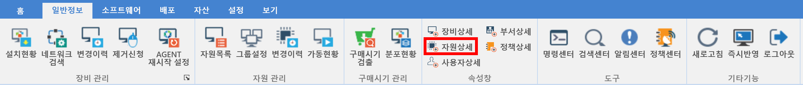
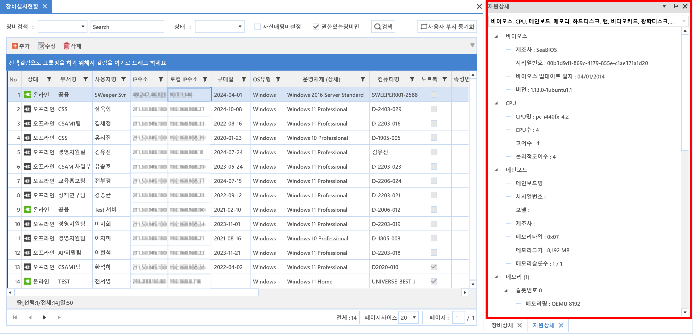

4-4-2. 자원상세
4-4-2. 자원상세
Source: https://www.sweeper.or.kr/etc/manual/4-4-2.html
4-4-2. 자원상세


선택한 장비에 대한 장치정보들 즉, 장비 자원상세정보를 볼수 있는 속성창입니다.


화면설명
- 장비의 HW 자원정보(바이오스, CPU, 메인보드, 메모리, 하드디스크, 랜, 비디오카드, 광학디스크, 모니터)를 확인할 수 있습니다.
- 각 장치별 상세한 정보는 장비를 선택할 경우 즉시 변경되기 때문에 내용 확인에 용이합니다.
© Copyright SWeeper Inc.. All Rights Reserved